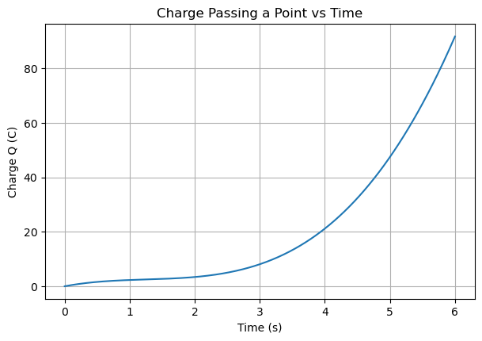

D4.5 Problems#
Problem D4.1 — Number of Electrons Passing a Point in a Wire#
A steady current of
flows through a wire for a time interval of
Assume the charge of one electron has magnitude
Answer the following:
Compute the total charge \(\Delta Q\) that passes a fixed point in the wire during this time.
Compute the number of electrons \(N\) that pass that point during this time.
Provide a short physical interpretation of what this result means.
Be careful with units.
Problem solution
Relevant equations
Current definition:
Number of electrons:
Given
\(I = 2.40\ \text{A} = 2.40\ \text{C/s}\)
\(\Delta t = 35.0\ \text{s}\)
\(e = 1.60\times 10^{-19}\ \text{C}\)
1) Total charge passing the point
2) Number of electrons
3) Physical interpretation
A current of only a few amperes corresponds to an enormous number of electrons passing a point each second.
This does not mean the electrons travel quickly along the wire; it means that many charge carriers are already present throughout the wire and drift collectively.
The current measures a rate of charge flow through a cross-section, not the speed of a single electron from the battery to the device.
# DIY Cell
Problem D4.2 — Current from a Time-Varying Charge#
The total charge that has passed through a fixed cross-section of a wire is described by the function
where time \(t\) is measured in seconds.
Answer the following:
Determine the SI units of each numerical coefficient in the expression for \(Q(t)\).
Find an expression for the instantaneous current \(I(t)\).
Compute the current at \(t = 2.0~\text{s}\).
State whether the current is increasing or decreasing at \(t = 2.0~\text{s}\).
Provide brief explanations where appropriate.
Problem solution
Relevant definition
Instantaneous current is defined as
1) Units of the coefficients
Each term in \(Q(t)\) must have units of coulombs.
For \(3.0t^3\):
For \(-4.0t^2\):
For \(2.0t\):
2) Instantaneous current
Differentiate \(Q(t)\) with respect to time:
So,
3) Current at \(t = 2.0~\text{s}\)
4) Is the current increasing or decreasing?
Compute the time derivative of the current:
At \(t = 2.0~\text{s}\),
So the current is increasing at \(t = 2.0~\text{s}\).
Physical interpretation
A polynomial charge function implies that charge is accumulating at a changing rate.
The current is the slope of the \(Q\) vs. \(t\) graph.
A positive \(dI/dt\) means the current itself is increasing with time.
# DIY Cell
Problem D4.3 — Charge from a Time-Varying Current#
The electric current through a wire varies with time according to
where time \(t\) is measured in seconds.
Assume that the total charge that has passed through the wire is zero at \(t = 0\).
Answer the following:
Determine the SI units of each numerical coefficient in the expression for \(I(t)\).
Find an expression for the total charge \(Q(t)\) that has passed through the wire as a function of time.
Compute the total charge that has passed through the wire by \(t = 3.0~\text{s}\).
Briefly interpret the physical meaning of the integration constant.
Problem solution
Relevant definition
Electric current is defined as
1) Units of the coefficients
Each term in \(I(t)\) must have units of amperes (C/s).
For \(6.0t^2\):
For \(-4.0t\):
For \(1.0\):
2) Charge as a function of time
Integrate the current:
Apply the initial condition \(Q(0) = 0\):
So,
Here, we used \(\text{Constant}\) for the integration constant to avoiud confusion with the unit for charge: C - Coulomb.
3) Charge at \(t = 3.0~\text{s}\)
4) Physical interpretation
The charge is the area under the \(I\) vs. \(t\) curve.
The integration constant represents the initial amount of charge that has already passed the point.
Setting \(Q(0)=0\) establishes a clear physical reference point for charge flow.
# DIY Cell
Problem D4.4 — Oscillating Charge on a Circuit Element (Finding the Current)#
In a circuit element (for example, the plates of a capacitor), the charge stored on one side is observed to oscillate in time according to
with
Assume \(t\) is measured in seconds.
Answer the following:
Determine the SI units of \(Q_0\) and \(\omega\).
Find an expression for the instantaneous current \(I(t)\) in the circuit element.
Determine the maximum current \(I_{\max}\).
Compute the current at \(t = 4.00~\text{ms}\).
Problem solution
Relevant definition
Current is the time rate of change of charge:
1) Units
\(Q_0\) is a charge amplitude, so its SI unit is coulombs:
The argument of cosine must be dimensionless, so \(\omega t\) is unitless. Since \(t\) is seconds:
2) Current as a function of time
Differentiate \(Q(t)\):
Substitute the given values. First convert \(Q_0\):
So,
or
3) Maximum current
Since \(|\sin(\omega t)| \le 1\), the maximum magnitude of the current is the amplitude:
4) Current at \(t = 4.00~\text{ms}\)
Convert time:
Compute:
Numerically, \(\sin(2.00) \approx 0.909\), so
Physical interpretation
When the stored charge oscillates, the current oscillates as well because current measures how rapidly charge changes with time.
The current is zero when the charge is at a maximum or minimum (slope of \(Q(t)\) is zero).
The current is largest when the charge passes through zero (slope is steepest).
# DIY Cell
Problem D4.5 — Charge from an Oscillating Current#
In a circuit element, the electric current varies with time according to
where
Assume time \(t\) is measured in seconds and that the total charge that has passed through the element is zero at \(t = 0\).
Answer the following:
Determine the SI units of \(I_0\) and \(\omega\).
Find an expression for the total charge \(Q(t)\) that has passed through the element as a function of time.
Determine the maximum magnitude of the charge.
Compute the charge at \(t = 5.00~\text{ms}\).
Briefly explain the phase relationship between current and charge.
Problem solution
Relevant definition
Electric current is defined as
1) Units
\(I_0\) is a current amplitude:
The argument of the sine function must be dimensionless, so
2) Charge as a function of time
Integrate the current:
Apply the initial condition \(Q(0) = 0\):
Thus,
3) Maximum charge
Since \(0 \le 1 - \cos(\omega t) \le 2\),
4) Charge at \(t = 5.00~\text{ms}\)
Convert time:
Substitute values:
Numerically,
5) Physical interpretation
Charge is the time integral of current.
The charge oscillates because the current oscillates.
The charge lags the current by a phase of \(\pi/2\) (90°), since integration shifts phase.
The amplitude of charge depends on both the current amplitude and the oscillation frequency.
# DIY Cell
Problem D4.6 — Daily Life Circuit: Phone Charger and Cable Heating#
You plug your phone into a wall charger. The charger provides an output voltage of
While charging, the phone draws a current of
The charging cable (both wires together) has a total resistance of
Assume steady-state DC behavior.
Answer the following:
Compute the power delivered by the charger.
Compute the voltage drop across the cable.
Compute the power loss (thermal power) in the cable.
What fraction (percent) of the charger’s power is lost as heat in the cable?
Provide a short physical interpretation: why do higher-quality (thicker) cables tend to run cooler and charge faster?
Problem solution
Relevant equations
Power delivered:
Voltage drop across a resistor (Ohm’s law):
Resistive power loss:
Given
\(\Delta V = 5.0\ \text{V}\)
\(I = 2.0\ \text{A}\)
\(R_{\text{cable}} = 0.30\ \Omega\)
1) Power delivered by the charger
2) Voltage drop across the cable
This means the phone effectively receives about \(5.0 - 0.60 = 4.4\ \text{V}\).
3) Power loss in the cable
4) Percent power lost in the cable
5) Physical interpretation
The cable behaves like a small resistor in series with the phone.
A larger cable resistance produces a larger voltage drop and larger power loss.
Thicker, higher-quality cables have lower resistance, so they waste less power as heat and deliver more voltage to the phone, allowing faster charging.
# DIY Cell
Problem D4.7 — Resistance of a Copper Wire#
Household wiring, extension cords, and device cables use standard wire gauges rather than specifying the wire diameter directly. In this problem, you will determine the electrical resistance of a copper wire using its gauge, length, and material properties.
A note on wire gauge#
In the American Wire Gauge (AWG) system:
The gauge number specifies the diameter of the wire.
Smaller gauge number → thicker wire → lower resistance.
The diameter (or radius) is not encoded in a simple formula and is normally obtained from a standard AWG table.
👉 For this problem, you must look up the diameter (or radius) of the given gauge using a reliable reference (textbook table, manufacturer chart, or trusted online source).
Given#
A straight copper wire has:
Gauge: AWG 18
Length:
\[ L = 12.0\ \text{m} \]Resistivity of copper:
\[ \rho = 1.68\times 10^{-8}\ \Omega\cdot\text{m} \]
Assume the wire is uniform and at room temperature.
Tasks#
Look up the diameter or radius of an AWG 18 copper wire.
Compute the cross-sectional area of the wire.
Compute the electrical resistance of the wire.
Briefly explain why lower-gauge wires are used for high-current applications.
Be careful with units.
Problem solution
Relevant equation
For a uniform cylindrical wire, resistance is given by
where \(A\) is the cross-sectional area.
1) Wire diameter (from AWG table)
For AWG 18, the diameter is approximately
Thus the radius is
2) Cross-sectional area
3) Electrical resistance
4) Physical interpretation
Thicker (lower-gauge) wires have larger cross-sectional area.
Larger area means lower resistance, which reduces:
voltage drop,
power loss (\(I^2R\) heating),
overheating and fire risk.
This is why high-current devices (heaters, power tools, appliances) require low-gauge wiring.
# DIY Cell
Problem D4.8 — Coffee Maker Heating Element (Daily Life Application)#
A single-cup coffee machine heats water using an internal resistive heating element.
The heating element is connected to a standard household outlet that provides a voltage of
The resistance of the heating element is
To brew one cup of coffee, the machine must heat
of water (about one cup) from room temperature
to the brewing temperature
Assume:
The specific heat capacity of water is
\[ c = 4186\ \mathrm{J/(kg·K)}. \]All electrical energy delivered to the heating element goes into heating the water.
The heating element operates at constant resistance.
Tasks#
Compute the current through the heating element.
Compute the power dissipated by the heating element.
Compute the thermal energy required to heat the water.
Determine how long it takes to heat the water for one cup of coffee.
Briefly explain why coffee machines typically draw large currents.
Be careful with units and show your reasoning.
Problem solution
Relevant equations
Ohm’s law:
Electrical power:
Thermal energy:
Heating time:
1) Current through the heating element
2) Power dissipated
3) Thermal energy required
Temperature change:
4) Heating time
5) Physical interpretation
Heating water requires a large amount of energy.
To deliver that energy quickly, the heating element must dissipate large power.
At fixed household voltage, large power requires large current, which is why coffee machines and kettles draw many amperes.
# DIY Cell
Problem D4.9 — Daily Life Application: LED Night-Light Circuit#
A small plug-in LED night-light contains an internal resistor that limits the current through the LED. Inside the device, a 20.0 V DC power supply feeds a resistor of resistance
Assume:
The voltage drop across connecting wires is negligible.
All electrical power supplied by the source is dissipated in the resistor (the LED power is small compared to the resistor loss).
Tasks#
Determine the current flowing through the resistor.
Determine the power dissipated by the resistor.
Determine the power supplied by the power source.
Explain what happens to the energy dissipated by the resistor in this real device.
Problem solution
Relevant equations
Ohm’s law:
Electrical power:
Given
\(\Delta V = 20.0~\text{V}\)
\(R = 10.0~\text{k}\Omega = 1.00\times 10^{4}~\Omega\)
1) Current through the resistor
2) Power dissipated by the resistor
3) Power supplied by the source
Because all supplied power is dissipated in the resistor,
4) Physical interpretation
The resistor converts electrical energy into thermal energy through microscopic collisions between charge carriers and the atomic lattice.
In a small device like a night-light, this heat is usually unnoticeable but still represents energy consumption.
Current-limiting resistors are intentionally used to protect sensitive components (such as LEDs) from excessive current.
This example illustrates how resistors control current in everyday electronics while safely dissipating energy as heat.
# DIY Cell
Problem D4.10 — Real Life Electricity Cost: Incandescent vs. LED#
A common household upgrade is replacing old incandescent light bulbs with LED bulbs that produce the same brightness with much less power. A 100-W incandescent bulb can be replaced by a 16-W LED bulb. Both produce about 1600 lumens of light (roughly the brightness of a traditional “100 W bulb”).
Assume:
Electricity costs $0.12 per kWh
The bulb is used 5.0 hours per day
Answer the following:
How many kilowatt-hours (kWh) of energy does each bulb use in one year?
What is the annual cost to run each bulb?
How much money is saved per year by using the LED instead of the incandescent?
Briefly interpret where the “wasted” energy goes in the incandescent bulb compared to the LED.
Problem solution
Relevant ideas
Electrical energy used:
with \(P\) in kilowatts and \(t\) in hours gives \(E\) in kWh.
Cost:
Given
Incandescent: \(P_{\text{inc}} = 100~\text{W} = 0.100~\text{kW}\)
LED: \(P_{\text{LED}} = 16~\text{W} = 0.016~\text{kW}\)
Usage: \(5.0~\text{h/day}\times 365~\text{days} = 1825~\text{h/year}\)
Electricity rate: \(0.12~\$/\text{kWh}\)
1) Energy used in one year
Incandescent:
LED:
2) Annual cost
Incandescent:
LED:
3) Annual savings
So,
4) Physical interpretation
Incandescent bulbs produce light by heating a filament to a very high temperature, so most electrical energy becomes thermal energy (heat), not visible light.
LEDs produce light through electronic transitions and are much more efficient, so a larger fraction of the electrical energy becomes visible light and much less becomes heat.
# DIY Cell
Problem D4.11 — Estimating Current from a Charge–Time Graph#
The graph below shows the total charge \(Q(t)\) that has passed through a point in a wire as a function of time.
You should not assume a specific functional form for \(Q(t)\).
Instead, treat the graph as experimental data.
Tasks#
Explain how the electric current is related to the slope of the \(Q\) vs. \(t\) graph.
Estimate the average current between
\(t = 1.0~\text{s}\) and \(t = 3.0~\text{s}\).
Estimate the instantaneous current at
\(t \approx 4.0~\text{s}\).
Identify a time interval where the current is largest, and explain how you can tell from the graph.
Clearly state how you obtain your estimates.
Hint#
Problem solution (using reasonable graphical estimates)
1) Current and slope
Electric current is the rate at which charge passes a point:
Average current over an interval is the slope of a secant line:
\[ I_{\text{avg}} = \frac{\Delta Q}{\Delta t}. \]Instantaneous current at a time is the slope of the tangent line:
\[ I(t) = \frac{dQ}{dt}. \]
2) Average current from \(t=1~\text{s}\) to \(t=3~\text{s}\)
From the graph (read to the nearest whole coulomb):
At \(t = 1~\text{s}\), \(Q \approx 2~\text{C}\)
At \(t = 3~\text{s}\), \(Q \approx 8~\text{C}\)
Then
3) Instantaneous current at \(t \approx 4~\text{s}\)
Estimate the slope of the tangent by using two nearby points:
From the graph:
\(Q(3.5~\text{s}) \approx 15~\text{C}\)
\(Q(4.5~\text{s}) \approx 27~\text{C}\)
Approximate slope:
(Any estimate in this range is reasonable.)
4) Where is the current largest?
The current is largest where the \(Q(t)\) curve is steepest, since slope corresponds to current.
From the graph, the curve becomes steepest near the right end of the plot, roughly:
Reason: the charge is increasing most rapidly there, so \(dQ/dt\) is largest.
Physical interpretation
Current is not “how much charge there is,” but how fast charge is changing.
A gently sloped curve corresponds to small current.
A steep curve corresponds to large current.
Graphs like this emphasize that current is a rate, not a static quantity.

Challenge Problem D4.12 — Quadratic Charge Model (Derivatives, Integrals, Plotting)#
A simple model for charge flow through a circuit element is that the total charge that has passed a point grows as a quadratic function of time:
where \(t\) is in seconds.
Tasks (use SymPy)#
Units check
Determine the SI units of the constants \(2.0\) and \(1.0\) in the expression for \(Q(t)\).Current from a derivative
Use\[ I(t) = \frac{dQ}{dt} \]to find \(I(t)\).
Charge transferred from 1.0 s to 5.0 s (integral method)
Compute\[ \Delta Q_{1\to 5}=\int_{1}^{5} I(t)\,dt \]Average current on the interval 1.0 s to 5.0 s
Compute\[ I_{\text{avg}}=\frac{Q(5)-Q(1)}{5-1}. \]Plotting
Create two plots side by side:\(Q(t)\) vs. \(t\)
\(I(t)\) vs. \(t\)
Physical interpretation (short)
In 2–3 sentences, explain what it means physically that \(I(t)\) increases with time for this model.
Solution guide (expected results)
1) Units
Since \(Q\) is in coulombs:
\(2.0t^2\) must have units of C, so \([2.0] = \text{C/s}^2\)
\(1.0t\) must have units of C, so \([1.0] = \text{C/s}\)
2) Current
So,
3) Charge transfer check
Evaluate:
So,
4) Average current on 1 to 5 s
Interpretation
Because \(I(t)=4t+1\) increases with \(t\), the charge flow rate increases over time: the circuit delivers more coulombs per second as time goes on.
# DIY Cell